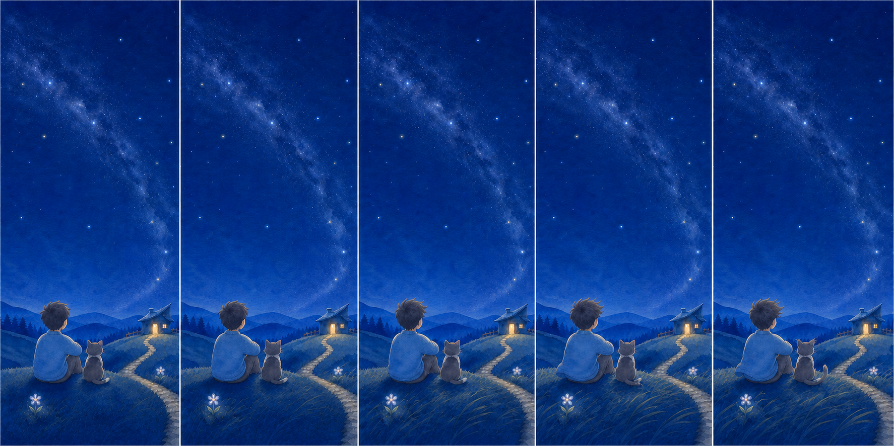
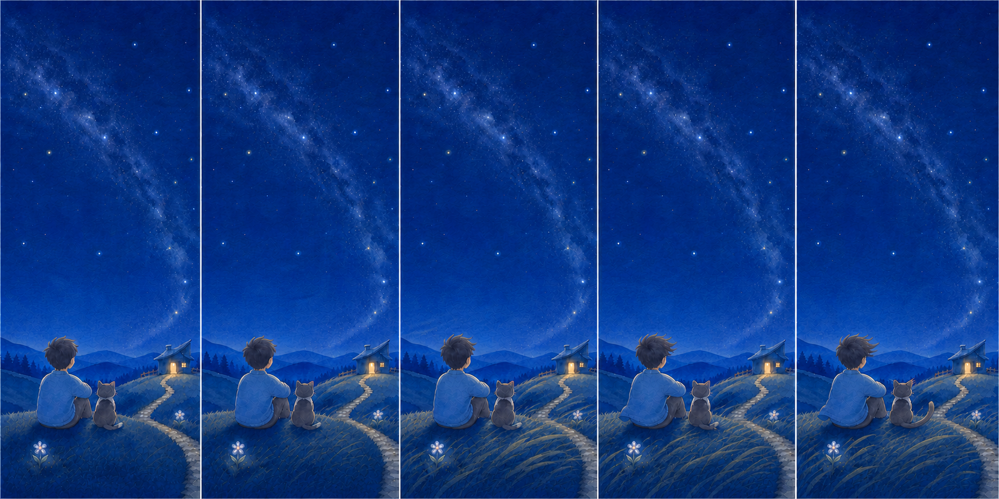

R1变化偏细，手机上主要像草纹轻微移动。

STYLE DIRECTION APPROVED · STORYBOARD R2 STRONGER · AWAITING USER REVIEW · NOT FOR BUILD
OUTDOOR-ILLUSTRATION-WIND-V1-A
星空、小屋和门保持稳定；只让草坡、人物与猫依次换成完整插画风态。 R2 放大下半场轮廓变化，每次换页仍用 140ms 双画面交叉淡化，不硬切、不闪空帧。
原速动效板
F0 · 风来前的安静
五联画 · 25% 仍需可辨
上半场稳定保留；风只改草坡、发梢衣角和猫耳尾。正式人物、猫与风页仍须原创分层重绘。

25% 缩略图F0、F2、F4 要能不看标注分出来。
R1变化偏细，手机上主要像草纹轻微移动。

R2草坡、发梢衣角和猫尾形成更大的轮廓差。